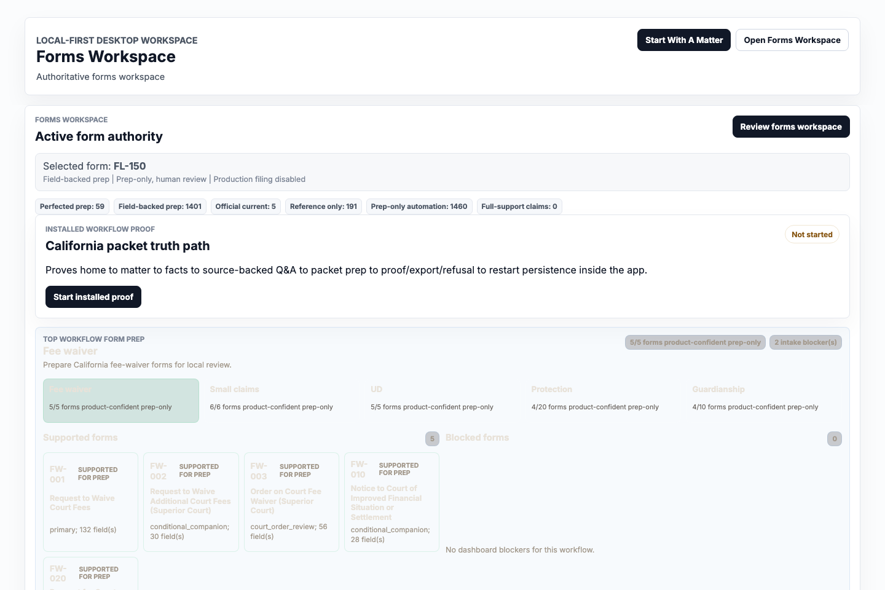

Product goal
Prepare source-grounded legal work locally while refusing unsupported jurisdictions, missing facts, production filing, payment, service, court contact, and legal-result claims.
Engineering case study
A local-first legal AI work system with a desktop app, browser frontend, court-form prep engine, source/proof legal-safety layer, redacted audit trails, and verifier-gated release discipline.

Legal AI demos often blur prompts, sources, output, and product claims into one answer box. That is risky in law. Foltz separates the system into intake, classification, source attachment, deterministic checks, local drafting, human review, export-only handoff, and refusal paths.
Prepare source-grounded legal work locally while refusing unsupported jurisdictions, missing facts, production filing, payment, service, court contact, and legal-result claims.
Make the user-facing flow rich enough to feel useful, but make every promotion claim depend on manifests, source/proof records, readback evidence, screenshots, and release verifiers.
The stack combines a TypeScript frontend, Tauri desktop packaging, Rust validation and workflow code, local model governance, Playwright coverage, and verifier scripts that produce auditable evidence.
Assistant home, matter workspace, forms workspace, proof dashboard, and identity passport surfaces keep workflows visible instead of hiding state behind a single chat box.
Support labels, source freshness, proof spans, missing-fact gates, redacted event logs, and no-production boundaries prevent unsafe promotion.
Build checks, type checks, focused verifiers, website audits, browser smoke tests, and product readiness gates make readiness a command output, not a vibe.
The private Foltz product repo is not public while release, legal-safety, and product-readiness gates are still active. The public GitHub portfolio shows adjacent proof: reproducibility packages, rules-as-code work, and the launched website source.
Static source for this public site: recruiter-facing positioning, AI-readable summaries, boundary copy, and launched assets.
View on GitHubReproducibility package for fixed-ontology GraphRAG court-form filling experiments.
View on GitHubPublic reproducibility package for the Assistant Memory Risk in Legal Self-Help benchmark.
View on GitHubPublic reproducibility package for Legal AI Defensibility Packages and the Paper 109 artifact release.
View on GitHubRules-as-code test vectors and reference runtimes for federal benefits eligibility workflows.
View on GitHubFoltz uses narrow proof commands for each claim. A green website is not allowed to imply public beta, customer acceptance, legal approval, notarized distribution, production court/provider authority, or legal outcome support.
Checks for generic AI residue, unsupported pitch claims, missing boundary language, and archived artifact labels.
Verified locallyProduction build and release TypeScript checks prove the frontend still compiles after product and website changes.
Verified locallyFinal readiness passes internally but keeps public beta and pilot claims blocked until external evidence exists.
External blockers explicit